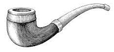

Test Songbook
Exercising all features
Hopefully all features
Danny Boy
English ballad
Subtitle 2
- This is an unlabeled verse.
-
1.
A7 I7 Oh Danny D IV Boy, the pipes, the D7 IV7 pipes are G VIIb calling
From glen toD IV glen, and F#m VIm down the G VIIb mountain A7 I7 side
The summer’sD IV gone, and all the D7 IV7 flowers are G VIIb dying
‘Tis you, ’tisD IV you must Em Vm go and A7 I7 I must D IV bide. -
Ch1.
6b7 But come ye 7bm back when 4# summer’s 6b7 in the 1# meadow
Or when the7bm valley’s 4# hushed and 4m white with 3b7 snow 6b7
‘Tis I’ll be1# here in 4# sunshine or in 1# sha 7bm dow.
Oh Danny1# Boy, oh Danny 4# Boy, I 6b7 love you 1# so. -
Second verseAnd if you come,
when all the flowers are dying
And I am dead,
As dead I well may be
You’ll come and find
The place where I am lying
And kneel and say an ”Ave” there for me. - Bullet list item 1
- Bullet list item 2
-
Ch2.And I shall hear, though soft you tread above me
And all my dreams will warm and sweeter be -
If you’ll not fail to tell me that you love me
I’ll sleep in peace until you come to me.
Wildcard 1
-
Ch.
Am Yippie yea C oh! Yippie yea Am yay!
Wildcard 2
-
1.
Am Yippie yea C oh! Yippie yea Am yay!
Multiple Songs 1
-
1.
Am Yippie yea C oh! Yippie yea Am yay!
Multiple Songs 2
-
1.
Am Yippie yea C oh! Yippie yea Am yay!